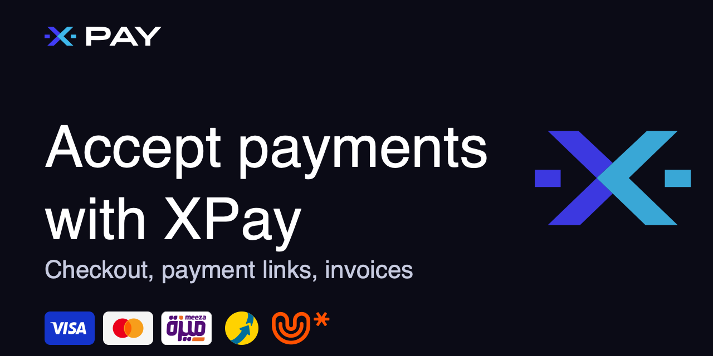
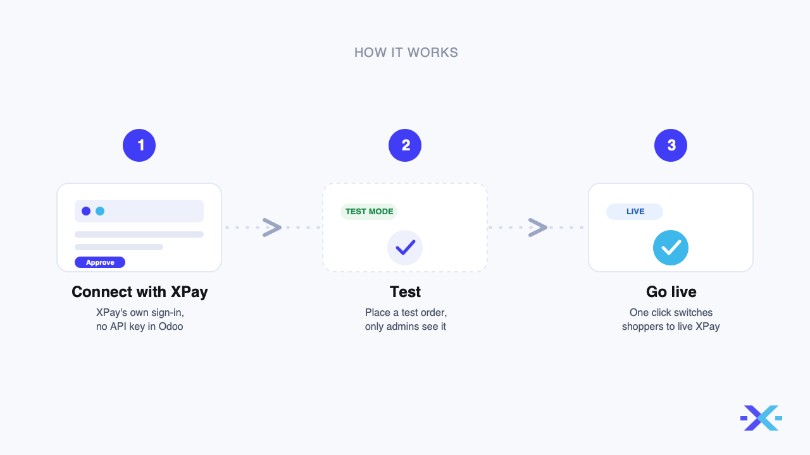
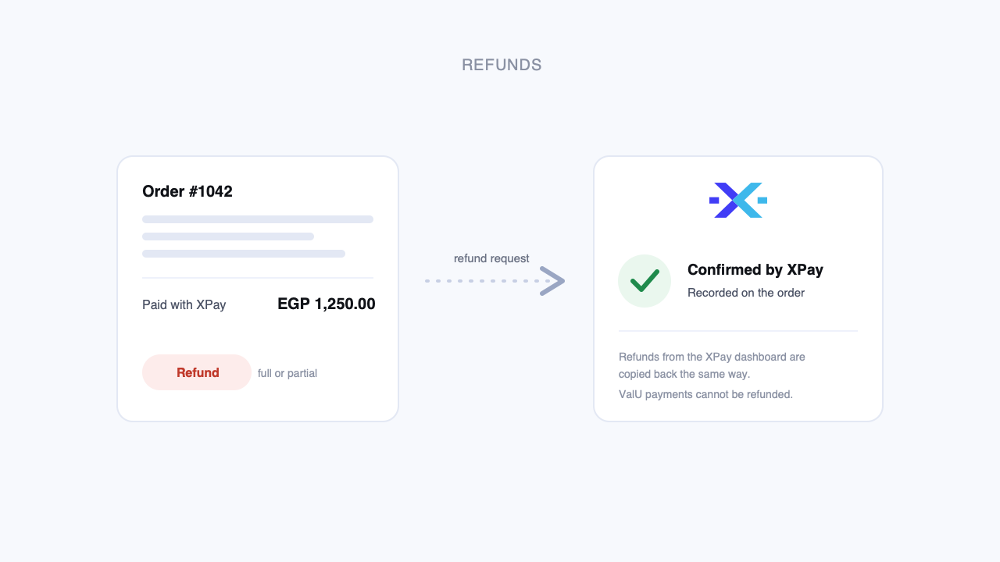

Accept payments with XPay in Odoo: the eCommerce checkout, payment links, and invoices paid online.
Connect in one clickClick Connect with XPay and it opens XPay's own sign-in and consent page. No API key is ever entered into Odoo, and the webhook that carries payment confirmations is set up for you automatically. Your test and live connections are kept separate, so trying the module never touches real payments. When you are ready, Go live switches shoppers over to your live XPay account. |
 |
The payment methods and currencies XPay offers at your checkout come straight from your XPay account: cards in every currency your account accepts, and in EGP the local methods your account has enabled, such as Fawry, ValU, InstaPay and mobile wallets. They are read when you connect and again whenever you click Refresh account, so your Odoo checkout matches what your XPay account supports.
Payment confirmations arrive as signed webhooks sent directly from XPay to your store. An order is confirmed by the platform itself, not by whatever the shopper's browser reports on its way back, so a paid order is confirmed even when the shopper closes the tab.
|
 |
Refunds from OdooRefund straight from the order or the invoice, for the full amount or part of it. XPay confirms every refund back to Odoo, and a refund made from the XPay dashboard is copied back to Odoo the same way. ValU payments are the one exception: they cannot be refunded through XPay. |
Contact XPay support through your merchant dashboard. The module's troubleshooting page ships in its public repository at github.com/xpayeg/xpay-for-odoo.